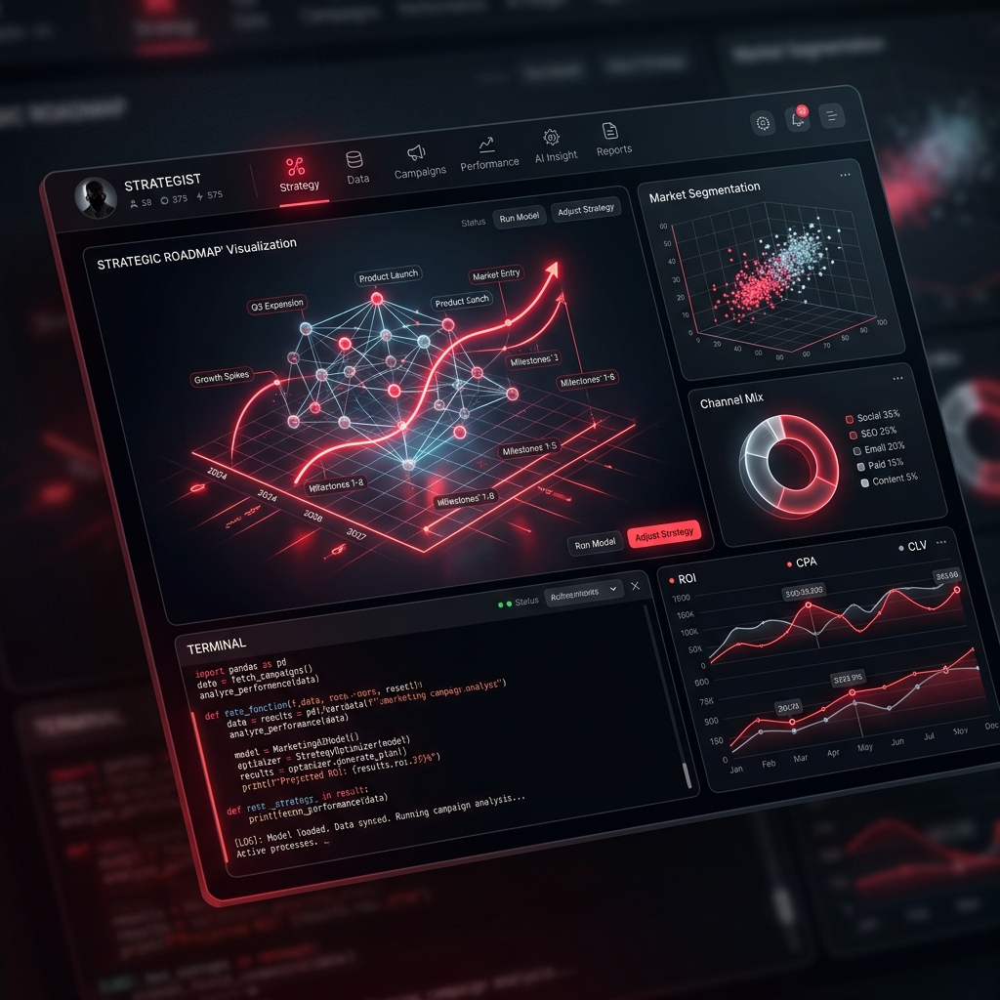

O primeiro framework de co-criação síncrona com IA construído especificamente para o método V4 Company. Deixe o trabalho braçal para o sistema e foque no que importa: a decisão do cliente.

Como o sistema transforma um lead em um cliente estruturado.
O processo começa com `/novo-cliente`. A IA lê o briefing e se conecta ao V4MOS para entender a saúde financeira e de anúncios. O resultado é o `diagnostico-maturidade`, que aponta exatamente onde o dinheiro está fugindo.
[ANALYSING] Client: Tech Solutions [V4MOS] Connected to Meta Ads Manager [INSIGHT] CPA is 40% above industry average. [INSIGHT] CRM shows 1.2% conversion rate. Generating Maturity Score... 64/100
Com dados em mãos, rodamos o `swot` e `persona-icp`. O diferencial? Usamos o framework Jobs-to-be-Done (JTBD). Não definimos apenas quem é o cliente, mas qual "trabalho" ele está contratando seu produto para fazer.
[FRAMEWORK] Matriz SWOT Determinística > Fraqueza: Altas taxas de drop no checkout. > Oportunidade: Implementar recuperação via WhatsApp. [ACTION PLAN] Generate CRO wireframe? (y/n)
Na semana 3, as skills `landing-page` e `copy-anuncios` entram em campo. Não é apenas texto; é código funcional e planilhas integradas que seguem o padrão visual e de persuasão que validamos na V4.
[OUTPUT] Generating 30+ Ad Variations [CODE] React Component for LP ready. [DEPLOY] v4-landing-page.vercel.app Workflow Status: 85% Completed
Uma jornada estruturada de 5 semanas que leva qualquer negócio do absoluto zero ao faturamento previsível.
Maturidade digital, SWOT estratégica, Persona baseada em JTBD e Auditoria completa.
Pesquisa de mercado (TAM/SAM/SOM), PUV, Diagnóstico de Mídia e CRO.
Produção de LPs, Criativos com IA, Copywriting em escala e Setup de CRM.
Cliente Oculto, Diagnóstico Comercial e qualificação de leads com IA.
Forecast avançado, Otimização de GMB e Scripts SDR automatizados.
Lê dados do V4MOS e gera score por pilar com comparativo do setor.
Define o Ideal Customer Profile usando o framework Jobs-to-be-Done.
Matriz SWOT acionável que conecta fraquezas a planos de ação.
Dimensionamento de mercado (TAM/SAM/SOM) e análise de concorrência.
PUV, Canvas 4P e definição do território de marca exclusivo.
Auditoria profunda de investimentos e performance em canais pagos.
Conceito visual, paleta estratégica e diretrizes de tipografia.
Geração de copy persuasivo e código pronto para deploy na Vercel.
Desenho de pipeline no Kommo com réguas de automação sugeridas.
Simulação de jornada de compra para avaliar tempo de resposta e script.
Scripts de qualificação para WhatsApp baseados em objeções reais.
Configuração de agentes Patagon e integração nativa com Kommo.
Ao contrário de IAs genéricas que "alucinam", nosso sistema usa **frameworks proprietários da V4** (como o Scoring Framework e Regras de Copy Performance) para garantir que o entregável seja sempre de nível Sênior.
Não perca tempo copiando planilhas. O sistema se conecta via API com os Ads Manager do cliente.
Use `/continuar` para que a IA lembre exatamente em que pé está cada um de seus clientes.
O plugin vive dentro do seu terminal, pronto para a ação.
No seu terminal principal do Claude Code:
/plugin marketplace add guilhermelippert/v4-estruturacao-marketplace
Garanta que você tem a versão mais recente dos ativos:
/plugin install v4-estruturacao-ia@v4-estruturacao-marketplace
Crie uma pasta dedicada para seus clientes e inicie o onboarding:
mkdir ~/meus-clientes && cd ~/meus-clientes claude > /onboarding
Comece a estruturação estratégica agora mesmo:
/novo-cliente --nome "Empresa X"